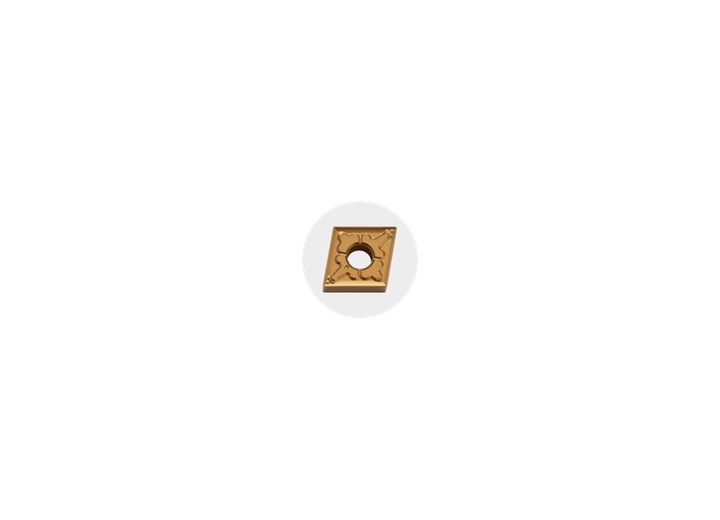

Herramientas de corte e insertos · Edición 2026
Torneado hierro fundido
Torneado hierro fundido - rompevirutas general · TK. Producto de Herramientas de corte e insertos. KDL ayuda a validar compatibilidad, disponibilidad y alternativas para mantenimiento industrial.

Datos para cotizar
- Designación ISO / geometría
- Material a maquinar
- Grado
- Portaherramienta
- Avance y velocidad